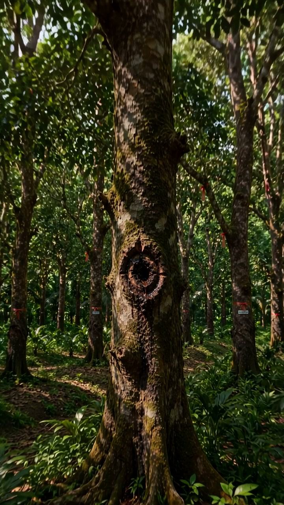

海南料的香韵以蜜韵、清雅、甜凉为主。室温下清甜，上炉后蜜香明显，层次干净，尾调悠长。喜欢清雅蜜韵的人，对海南料没有抵抗力。
海南料属于惠安系，和越南料风格接近，但蜜韵更突出。这是海南白木香的特点，也是它在历史上名气大的原因。
蜜韵是品香圈里的说法，指沉香里那种像蜂蜜一样的甜香，甜而不腻，带一点花果香。海南料的蜜韵比较突出，上炉之后尤其明显。
蜜韵是香韵的描述，不是成分指标。不同的料蜜韵强弱不同，同一批料不同温度下蜜韵也不一样。亲自闻过，才知道蜜韵是什么感觉。
海南沉香在古代就是名香，宋元以来通过海上贸易运往中原，被文人、宫廷、寺庙使用。古籍里说的“琼州香”“海南香”，指的就是海南料。
历史名气大，也让海南料的价格里带了一部分品牌溢价。买之前想清楚，你买的是料子还是名字。
海南野生沉香经过多年采伐，存量极少，而且受保护。市面上绝大多数海南沉香是种植料：人工种植的白木香，经过结香、采收、加工，品质稳定，溯源清楚。
种植料不是假货。种植和野生是两种来源，不是真假的区分。好的种植料香韵、油脂都不差，而且来源合法、价格透明。遇到“野生海南”，要问合法手续，没有手续的所谓野生料，本身就是问题。
第一，产区名不能当真假证明。证书只证明材质，不证明产地是海南。溯源说不清的，先别买。
第二，“野生”两个字要警惕。野生海南料极少，动不动就“野生”的，大概率是噱头。
第三，亲自闻。蜜韵清雅是海南料的招牌，闻着发闷、单一甜香、带化学味的，先别买。
喜欢清雅蜜韵、日常品香熏香的人，海南料是不错的选择。喜欢国产沉香、看重溯源和合法性的人，海南种植料是很好的选择。
预算有限的话，海南种植料的价格相对透明，入门体验不错。不必追求“野生”两个字，好料子不分野生种植。
| 看什么 | 海南沉香常见表现 |
|---|---|
| 香韵 | 蜜韵清雅，甜凉，尾调悠长 |
| 树种 | 白木香（国产沉香属） |
| 来源 | 绝大多数是种植料，野生极少 |
| 价格 | 历史名气带来一定溢价 |
| 适合 | 喜欢清雅蜜韵、看重溯源的人 |